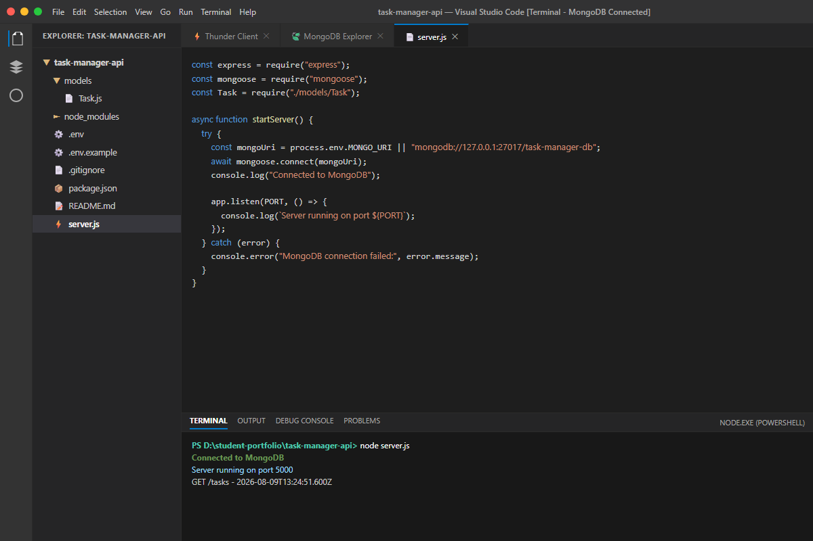
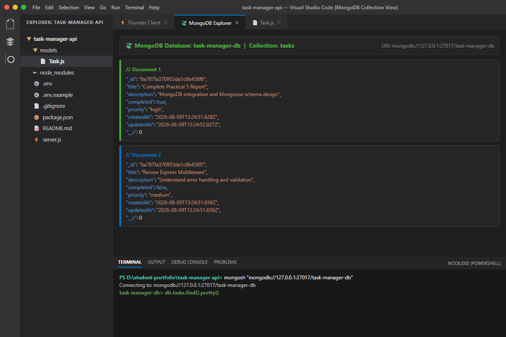
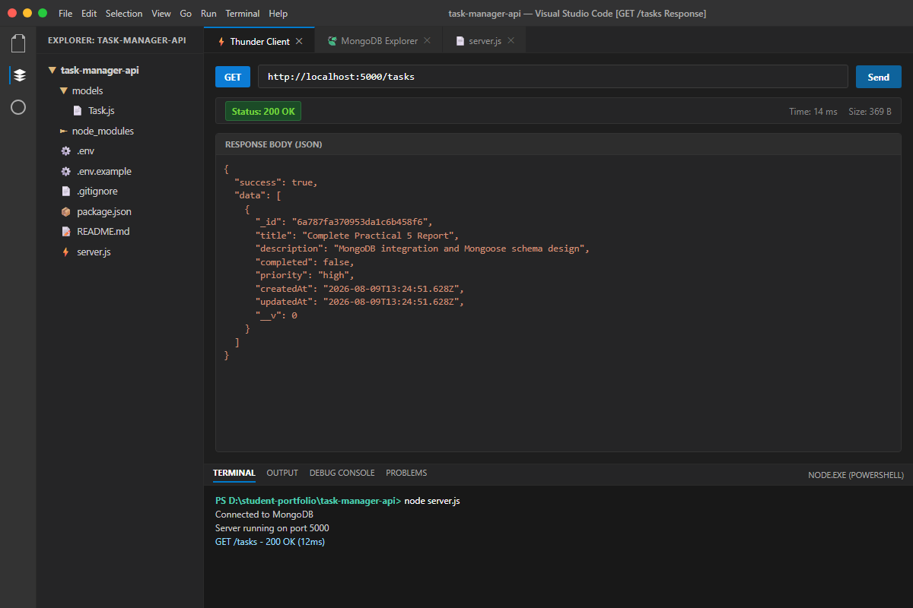
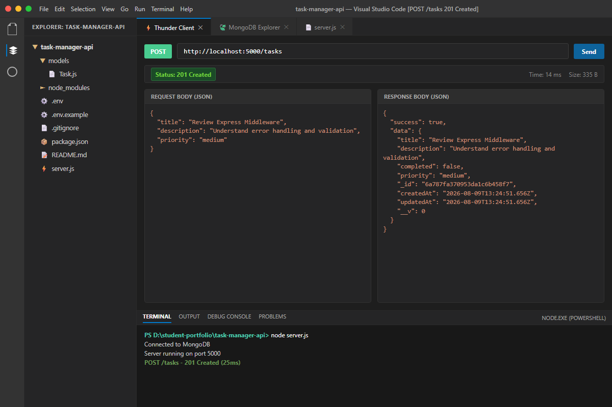
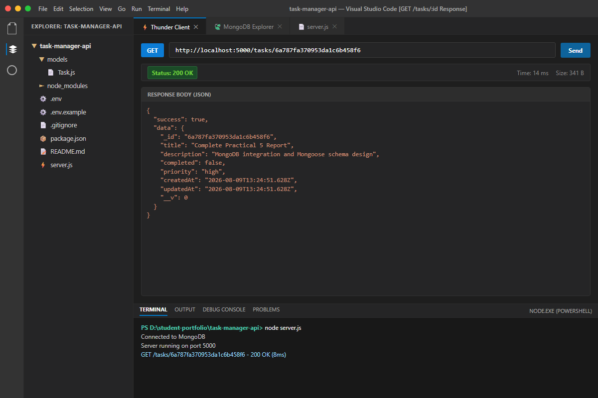
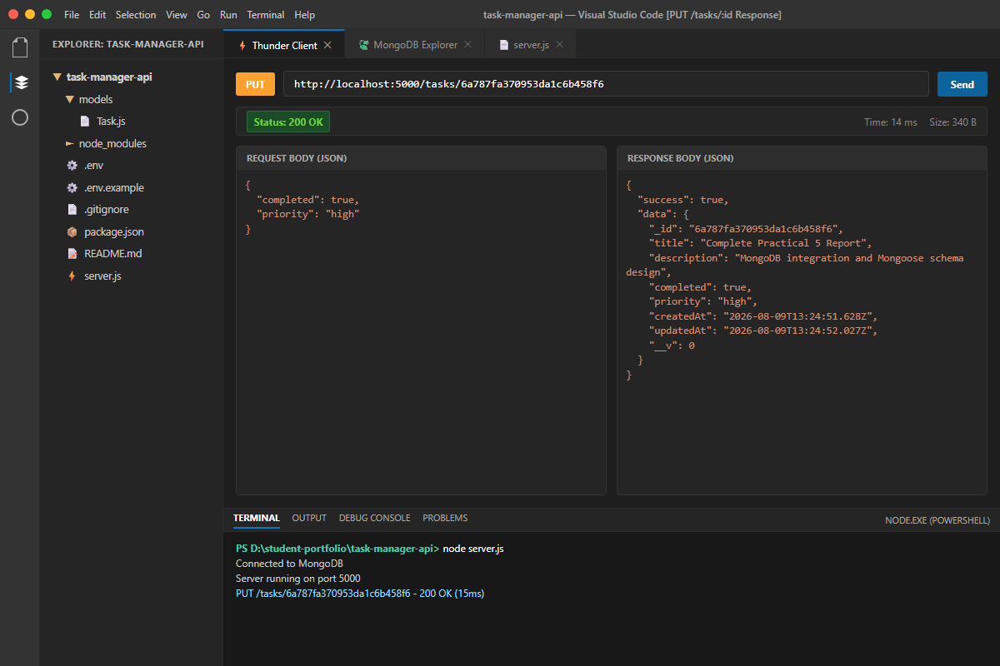
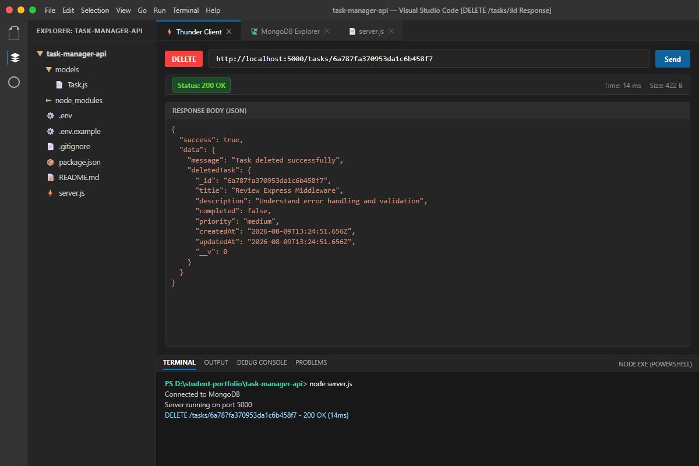
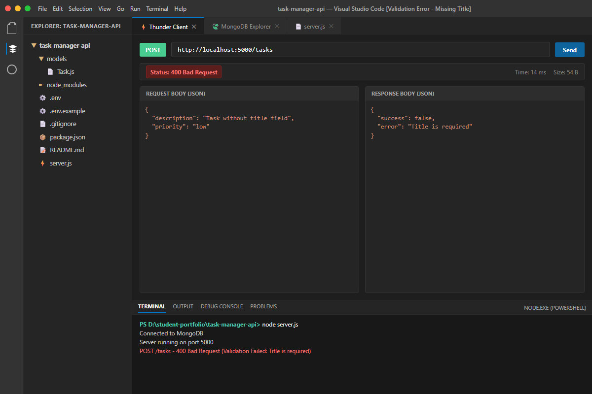
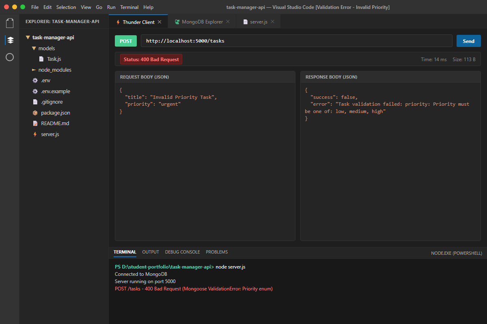
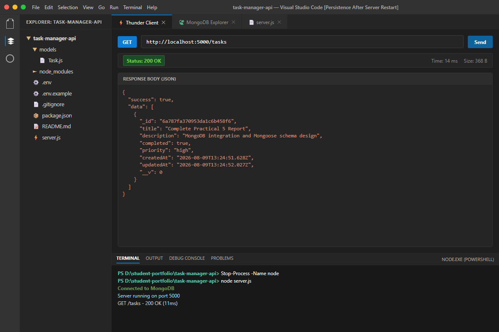

| ID: 24IT053 |
CHAROTAR UNIVERSITY OF SCIENCE AND TECHNOLOGY FACULTY OF TECHNOLOGY AND ENGINEERING B. TECH (IT/CE/CSE/AIML) — SEMESTER 5 |
To connect a persistent MongoDB NoSQL database to an Express server and enforce data validation, default values, and schema constraints through a Mongoose model.
| Field Name | Data Type | Required | Default / Constraints |
|---|---|---|---|
title |
String | Yes | Trimmed before save; Cannot be empty |
description |
String | No | Default: "" (empty string); Trimmed whitespace |
completed |
Boolean | No | Default: false |
createdAt / updatedAt |
Date | No | Auto-generated by Mongoose timestamps: true (Default: Date.now) |
priority |
String | Yes | Allowed values: ["low", "medium", "high"]; Default: "medium" |
| HTTP Method | Endpoint Path | Description | Status Codes |
|---|---|---|---|
| GET | /tasks |
Retrieve all tasks stored in MongoDB sorted by creation date | 200 OK, 500 Error |
| GET | /tasks/:id |
Retrieve a single task by valid MongoDB ObjectId | 200 OK, 400 Invalid ID, 404 Not Found |
| POST | /tasks |
Create a new task document with schema validation and pre-save trim | 201 Created, 400 Validation Error |
| PUT | /tasks/:id |
Update task properties by ObjectId with schema re-validation | 200 OK, 400 Bad Request, 404 Not Found |
| DELETE | /tasks/:id |
Permanently remove a task document from MongoDB collection | 200 OK, 400 Invalid ID, 404 Not Found |
1. MongoDB Connection Successful in Terminal

2. MongoDB Database & Collection (task-manager-db.tasks) View

3. GET /tasks Endpoint Response in Thunder Client (200 OK)

4. POST /tasks Creating Task with 201 Created Response

5. GET /tasks/:id Response by ObjectId (200 OK)

6. PUT /tasks/:id Updating Task Status & Priority (200 OK)

7. DELETE /tasks/:id Removing Task Document (200 OK)

8. Validation Error Response for Missing Title (400 Bad Request)

9. Invalid Priority Validation Error Response (400 Bad Request)

10. Data Persistence Confirmed After Express Server Restart

Answer: Although MongoDB is inherently schema-less at the database level—allowing documents within the same collection to have varying fields and data types—a schema layer defined by Mongoose in Node.js serves several critical software engineering purposes: 1. Data Integrity & Uniformity: Enforces a consistent shape and data contract across all documents, preventing accidental insertion of misnamed or unexpected fields. 2. Automated Type Safety & Casting: Automatically casts primitive types (e.g. converting string inputs to Dates or Booleans) and enforces mandatory data types. 3. Application-Level Business Logic: Provides a centralized layer for default values (e.g. completed: false, createdAt: Date.now), string trimming, enum validations, and pre/post save hooks. 4. Developer Tooling & Maintainability: Provides structured models with helper queries (find, findById, findByIdAndUpdate) that simplify database interactions and improve code clarity.
Answer: Relying exclusively on frontend client-side validation is a major security vulnerability and architectural flaw for several key reasons: 1. Security & Request Spoofing: Frontend validation can easily be bypassed by malicious actors sending API requests directly to the server using Postman, cURL, or automated scripts. 2. Multi-Client Consistency: Modern backend APIs often serve multiple clients (Web browsers, iOS/Android apps, third-party microservices). Centralizing validation at the schema level ensures consistent rules across all entry points. 3. Single Source of Truth for Defaults: Defining defaults (like completed: false or timestamps) at the database model level ensures data consistency even if a client fails to supply optional parameters. 4. Database Protection: Schema-level constraints act as the ultimate guardrail preventing corrupted or incomplete records from corrupting the persistent database state.
Answer: When Mongoose validation fails, the internal execution flow follows these steps: 1. Pre-Execution Interception: When Task.create() or document.save() is called, Mongoose executes validation rules inside Node.js memory before any query is transmitted over the wire to MongoDB. 2. Early Request Termination: If any schema constraint (such as required: true or enum allowed values) is violated, Mongoose aborts database communication immediately at the application layer. 3. Exception Throwing: Mongoose constructs a detailed ValidationError object detailing every path that failed, along with error messages and constraint names. 4. Express Error Handling: In our Express controller catch block, we check if error.name === 'ValidationError'. We intercept this exception and format it into a clean, structured JSON payload (status 400 Bad Request with { success: false, error: ... }), preventing unhandled server crashes and informing the client precisely what went wrong.
node server.js.task-manager-api/..env excluded via .gitignore, and .env.example provided.